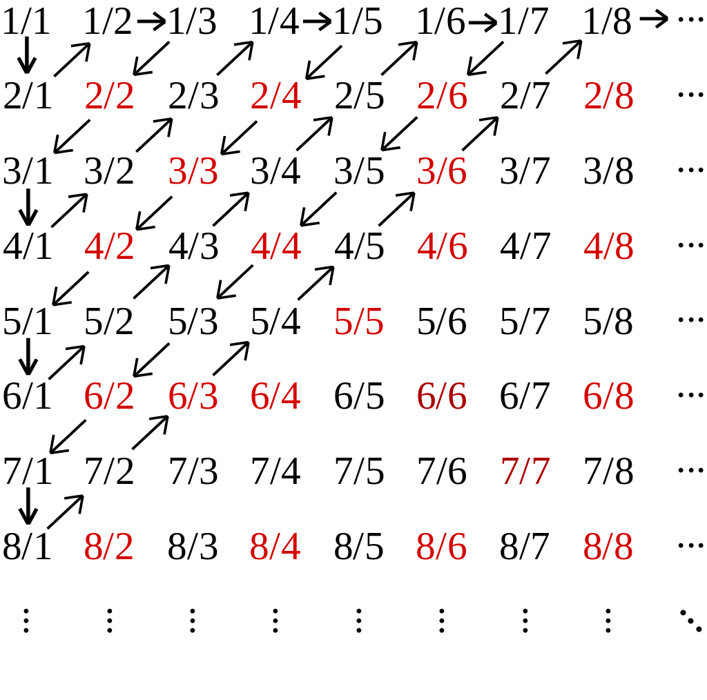

목표와 해볼것들
- 이전포스팅에서 유한집합간의 크기비교는 두 집합간의 어떤 함수가 존재하는지를 통해서 가능하다고 정리했습니다.
- 여기서는 이를 무한집합에서 확장하여 실제로 두 집합간의 크기(엄밀히,
cardinality)를 비교합니다. - 즉, 두 집합간의
전사,단사,전단사함수가 존재여부를 확인합니다.
자연수집합의 cardinality
- 자연수 집합 \(\mathbb{N} = \{1,2,3,\dots\}\)의 크기는 다음과 같이 정의합니다.(알에프널이라 읽어요.)
\[|\mathbb{N} = \aleph_0\]
- 우리의 목적은 무한집합간의 크기를 비교하는 것이였습니다.
- 그러기 위해서 자연수집합의 크기는 \(\aleph_0\) 정하고 다른집합이 이 크기보다 큰지 작은지를 확인합니다.
- 이 크기보다 큰지 작은지는 자연수집합과 또다른 집합간에 어떤 함수가 존재하는지를 통해 확인할 수 있습니다.
유리수집합의 cardinality
- 유리수집합의 cardinality를 구하기 위해서 여러가지 경우를 생각해본다.
Ex)홀수집합 vs 짝수집합의 경우
\(X = \{1,3,5,\dots\},Y = \{2,4,6,\dots\}\)
- 두 무한집합사이에 cardinality를 비교하려면 두 집합사이에 1)적당한 함수를 정의하고 2)어떤 함수인지 정의를 통해 확인한 후 3)cardinality를 구한다.
- \(f\)정의하기 \[\begin{aligned} f(1) &= 2 \\ f(3) &= 4 \\ f(5) &= 6 \\ &\vdots \end{aligned}\]
- 단사함수인가?(정의를 통해 확인)
- definition : \(\forall x_1,x_2\in X,x_1\neq x_2\implies f(x_1)\neq f(x_2)\)
- 정의역에 속한 임의의,모든 원소가 공역에 속하는 서로다른 원소에 mapping되므로 단사함수이다.
- 전사함수인가?(정의를 통해 확인)
- definition : \(\forall y \in Y,\exists x \in X \text{ such that } y = f(x)\)
- 공역에 속한 임의의,모든 원소가 적어도 하나의 정의역에 속하는 원소에 mapping되므로 전사함수이다.
- 결론
- \(f\)는 bijective function이다. \(\Longleftrightarrow |X| = |Y|\)
Ex)자연수(양의정수)집합 vs 홀수,짝수집합의 경우
\(\mathbb{N} = \{1,2,3,\dots\},Y = \{2,4,6,\dots\}\)
- \(f\)정의하기 \[\begin{aligned} f(1) &= 2 \\ f(2) &= 4 \\ f(3) &= 6 \\ &\vdots \end{aligned}\]
- 단사함수인가?
- definition : \(\forall x_1,x_2\in X,x_1\neq x_2\implies f(x_1)\neq f(x_2)\)
- 정의역에 속한 임의의,모든 원소가 공역에 속하는 서로다른 원소에 mapping되므로 단사함수이다.
- 전사함수인가?
- definition : \(\forall y \in Y,\exists x \in X \text{ such that } y = f(x)\)
- 공역에 속한 임의의,모든 원소가 적어도 하나의 정의역에 속하는 원소에 mapping되므로 전사함수이다.
- 결론
- \(f\)는 bijective function이다. \(\Longleftrightarrow |\mathbb{N}| = \aleph_0= |Y|\) (\(\aleph_0\)는 자연수집합의 cardinality를 의미한다.)
- 즉, 자연수집합과 짝수집합의 cardinality는 같다.
- 동일하게 유도해보면,자연수집합과 홀수집합의 cardinality도 같음을 보일 수 있으며 또한 자연수 집합과 자연수 집합 \(\cup\{0\}\)의 크기도 같음을 알 수 있다.
Q-궁금한거 : 정수집합에 대해서는 어떻게 cardinality가 같음을 유도할 수 있는가? - 또한 이를 확장하여,정수집합(양의정수 + 음의정수 + 0)도 자연수집합과 cardinality가 같음을 보일 수 있다.(???)
- 즉, \(|\mathbb{Z}| = |\mathbb{N}| = \aleph_0\)
무한집합의 정의와 특징
- 위의 결론을 활용하여 무한집합을 새롭게 정의할 수 있다.
무한집합의 정의 집합 \(A\)가 무한집합이다.
\(\Longleftrightarrow\) cardinality가 같은 진 부분집합이 존재할 수 있다.
(Note:유한집합에서는 불가능하다.)
Ex)자연수집합 vs 유리수집합
- 아래와 같은 격자에 놓여져 있는 유리수를 생각해보자.
- 격자의 세로축의 값은 분자이며 가로축의 값은 분모이다.
- 따라서 격자위에 놓인 수들은 양의 유리수집합\(\mathbb{Q}^c\)을 이룸을 알 수 있다.

\(X = \{1,2,\dots\},Y = \{1,\frac{2}{1}\,\frac{1}{2},\frac{1}{3},\frac{2}{2},\frac{3}{1}\dots\}\)
- \(f\)정의하기 \[\begin{aligned} f(1) &= 1 \\ f(2) &= \frac{2}{1} \\ f(3) &= \frac{1}{2} \\ f(4) &= \frac{1}{3} \\ &\vdots \end{aligned}\]
- 단사함수인가?
- definition : \(\forall x_1,x_2\in X,x_1\neq x_2\implies f(x_1)\neq f(x_2)\)
- 정의역에 속한 임의의,모든 원소가 공역에 속하는 서로다른 원소에 mapping되므로 단사함수이다.
- 전사함수인가?
- definition : \(\forall y \in Y,\exists x \in X \text{ such that } y = f(x)\)
- 공역(양의 유리수 집합)에 속한 임의의,모든 원소가 적어도 하나의 정의역에 속하는 원소에 mapping되므로 전사함수이다.
- 결론
- \(f\)는 bijective function이다. \(\Longleftrightarrow |X| = |\mathbb{N}| = \aleph_0= |Y|\)
- 양의 유리수 집합 \(\mathbb{Q}^+\)는 모두 \(Y\)에 포함되어 있다. \(\Longrightarrow X \subset \mathbb{Q}^+\subset Y \Longrightarrow |X| = \aleph_0\leq|\mathbb{Q}^+|\leq|Y|=\aleph_0 \Longrightarrow |\mathbb{Q}^+| = \aleph_0\)
- 즉, 자연수집합과 양의 유리수집합의 cardinality는 같다.
- 동일하게 유도해보면,자연수집합과 음의 유리수집합의 cardinality도 같음을 보일 수 있으며 또한 자연수 집합과 유리수 집합 \(\cup \{0\}\)의 크기도 같음을 보일 수 있다.
- 이를 확장하여 유리수집합(양의유리수 + 음의유리수 + 0)도 자연수 집합과 cardinality가 같음을 보일 수 있다.
Q-궁금한거 : 유리수집합에 대해서는 어떻게 cardinality가 자연수집합과 같음을 유도할 수 있는가?\(\aleph_0 + \aleph_0 = \aleph_0\)?
직관적인 정리
- \(\aleph_0 + 1 = \aleph_0\,\,,|\mathbb{N}| = |\mathbb{N}| \cup \{0\}\)
- \(\aleph_0 \times 2 = \aleph_0\,\,,\)자연수집합과 음의정수집합을 더한 집합의 카디널리티는 자연수집합의 카디널리티와 같음
- \(\aleph_0\times \aleph_0 = \aleph_0 ^2 = \aleph_0\,\,,\)자연수집합과 자연수집합의 곱집합으로 유리수집합(보다 큰)을 만들 수 있는데 이 집합도 자연수집합의 카디널리티와 같음